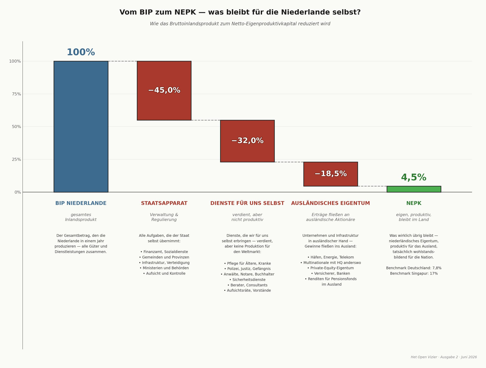

Die NEPK-Klimalogik: Selbstverstärkende Systemkrise
Warum die niederländische wirtschaftliche Implosion schneller voranschreitet als erwartet
Von Jacobus van Merksteijn · 22 Min. Lesezeit · 28. Mai 2026

Zusammenfassung: die Kernaussage
Der niederländische Netto Externe Produktivkern (NEPK) — das Maß für den Teil der Wirtschaft, der international wettbewerbsfähig produziert und exportiert — sank von 9% im Jahr 2000 auf 5% im Jahr 2024. Auf den ersten Blick eine allmähliche Erosion. In Wirklichkeit ein sich beschleunigendes System, das seinen eigenen Verfall verursacht.
Wie beim Klimawandel aktivieren kleine Veränderungen Rückkopplungsmechanismen, die den Prozess exponentiell beschleunigen. Ohne Eingreifen erreichen wir die kritische 3%-Schwelle nicht irgendwann um 2040 — sondern bereits in den frühen 30er Jahren.
Die Niederlande müssen vor 2029 über 3,5% NEPK bleiben, sonst wird die Implosion unumkehrbar.
Vom BIP zum NEPK — was bleibt den Niederlanden selbst?
Das Bruttoinlandsprodukt ist das, was die Niederlande in einem Jahr produzieren. Doch der größte Teil fließt zurück an den Staatsapparat, an Dienstleistungen, die wir für uns selbst erbringen, oder an ausländische Eigentümer. Was übrig bleibt — der Netto Externe Produktivkern — ist der Teil, der wirklich Wohlstand für die Nation selbst aufbaut.

Vergleicht man dies mit anderen Ländern: Deutschland erzielt noch 7,8% NEPK, Singapur sogar 17%. Die Niederlande stehen mit 4,5% am Ende der sieben untersuchten Länder. Darum dieser Artikel: Die NEPK-Klimalogik zeigt, warum dies so dringend ist und warum Abwarten keine Option mehr ist.
Die Klimalogik: Wie Systeme sich selbst verstärken
Das Klimasystem besitzt ein strukturelles Merkmal, das es politisch so gefährlich macht: Es reagiert nicht mit Gegendruck, sondern mit Verstärkung. Kleine Störungen aktivieren Mechanismen, die die Störung vergrößern. Vier klassische Beispiele:
Eisalbedo-Rückkopplung
Schmelzendes Eis → dunkler Ozean absorbiert Wärme → mehr schmilzt → Beschleunigung
Permafrost-Methan
Erwärmung → Methan freigesetzt → stärkeres Treibhausgas → mehr Erwärmung
Wasserdampf-Verstärkung
Wärmere Luft → mehr Wasserdampf → Treibhausgas → mehr Erwärmung
Waldverlust
Dürre → weniger CO₂-Aufnahme → mehr CO₂ → mehr Erwärmung → mehr Dürre
Kernmerkmal: Das System reagiert nicht mit Gegendruck, sondern mit Verstärkung — keine lineare, sondern exponentielle Beschleunigung nach einem kritischen Punkt. Genau dieses Muster erkennen wir in der niederländischen Wirtschaft wieder.
Tipping Points & Point of No Return
Nach einem Tipping Point helfen kleine Korrekturen nicht mehr. Das System hat einen neuen, stabilen, aber unerwünschten Zustand erreicht — unumkehrbar, selbst wenn sich die Politik danach ändert.
Klimawissenschaftler nennen drei bekannte Beispiele solcher Tipping Points:
- Grönländisches Eisschild: bei 1,5–2°C unumkehrbarer Zerfall
- Amazonas-Regenwald: bei zu viel Dürre kippt er zur Savanne
- Kollaps des Golfstroms: bei zu viel Süßwasserzufuhr stoppt die Ozeanzirkulation
Dieses Prinzip gilt nicht nur für das Klima — sondern auch für wirtschaftliche Systeme. Eine Volkswirtschaft, die ihren produktiven Kern verliert, kann ihn nicht einfach durch Politikanpassungen zurückkaufen.
Die NEPK-Logik: Wirtschaftlicher Klimawandel
Der niederländische NEPK zeigt exakt dieselbe Struktur selbstverstärkender Rückkopplungsschleifen wie das Klimasystem. Drei Schleifen verstärken sich gegenseitig und beschleunigen gemeinsam den Niedergang:
Wirtschaftliche Spirale
Kern schrumpft → Abgaben steigen → mehr Unternehmen weg → Kern schrumpft weiter
Kontrollspirale
Krise → mehr Regeln → Overhead wächst → Krise verschlimmert sich → noch mehr Regeln
Soziale Spirale
Kaufkraft sinkt → Sündenbockpolitik → Kapitalflucht → Steuerbasis schrumpft
Die anfängliche Störung ist das Overhead-Wachstum — genau wie CO₂ die anfängliche Klimastörung ist. Doch das System verstärkt diese Störung über drei parallele Kanäle gleichzeitig.
Politische Lähmung als Treibstoffreservoir
So wie der Permafrost enorme Mengen Methan enthält, die freigesetzt werden, sobald die Temperatur steigt, enthält die niederländische Demokratie politische Lähmung als beschleunigenden Treibstoff. Jeder Monat ohne handlungsfähige Regierung ist zusätzliches „Methan", das freigesetzt wird:
- Kein klarer Kurs → Investitionen aufgeschoben
- Ad-hoc-Notmaßnahmen → τ (Kollektivlastenverhältniskoeffizient) steigt ohne strukturelle Reform
- Bürokratie wächst unkontrolliert weiter
Die Exponentielle Kurve: 2000–2024
Der tatsächliche NEPK-Rückgang zeigt das Muster, das wir auch aus Klimadaten kennen: eine scheinbar langsame Phase, gefolgt von einer Beschleunigung, die die frühere Kurve verblassen lässt.
| Zeitraum | NEPK | Rückgangstempo | Beschleunigungsfaktor |
|---|---|---|---|
| 2000 | 9% | — | Baseline 1,0× |
| 2005 | 8% | 0,2%Pkt/Jahr | — |
| 2010 | 7% | 0,2%Pkt/Jahr | — |
| 2015 | 6% | 0,2%Pkt/Jahr | — |
| 2020 | 5,3% | 0,14%Pkt/Jahr | Scheinstabilisierung (Corona-Hilfen) |
| 2024 | 5% | 0,43%Pkt/Jahr | Faktor 2,0+ — exponentiell |
Der scheinbar langsame Rückgang 2017–2024 verdeckt die zugrundeliegende Beschleunigung. Corona-Hilfspakete verschoben Insolvenzen und schufen einen künstlichen Puffer — der sich nun (2024–2026) auflöst.
Die Drei Tipping Points des niederländischen Systems
Das NEPK-System kennt drei kritische Schwellenwerte. Jeder markiert einen qualitativen Sprung in der Systemreaktion — keine allmähliche Verschlechterung, sondern die Aktivierung neuer Rückkopplungsschleifen.
5%-Schwelle — jetzt erreicht
2023–2024
Exit-Mentalität dominant. 60% der Unternehmer machen ihr Unternehmen verkaufsbereit. Fokus verschiebt sich von Wachstum zu Umverteilung. Kollektivlasten: 42%+, ausländisches Eigentum: 45%+. Rückgang beschleunigt sich auf 0,25–0,35 Prozentpunkte/Jahr.
3%-Schwelle — Fiskalkrise
Erwartet 2029–2033
Kollektivlasten steigen auf 48–50%. Ausländisches Eigentum über 55–60%. Schulden/BIP über EU-Normen, strukturelles Defizit >3%. Rückgang beschleunigt auf 0,4–0,6 Prozentpunkte/Jahr. Mediennarrativ „Revolution gegen die Reichen" gewinnt Rückhalt. System nähert sich dem Point of No Return.
2%-Schwelle — Point of No Return
Risiko 2033–2037
NEPK 2–2,5%. Kollektivlasten über 55%, Schulden/BIP möglicherweise über 100%. Massive Kapitalflucht. Konfiskatorische Maßnahmen: Exit-Steuern 50%+, Vermögensteuer 2%+, Verstaatlichungen. Die Niederlande werden eine Niedrigproduktivitätswirtschaft, abhängig von EU-Transfers. Dies ist das Äquivalent des Verlusts des Grönländischen Eisschilds: unumkehrbar, selbst wenn die Politik sich danach ändert.
Das Demokratie-Paradox
Die Demokratie, die das System reparieren sollte, ist selbst zu einem Beschleunigungsmechanismus geworden. Drei strukturelle Mechanismen verstärken die NEPK-Erosion:
Fragmentierung → Blockade
Mehr Parteien → längere Koalitionsverhandlungen → keine strukturellen Reformen
Macht ohne Verantwortung
Beamte schützen ihre eigene Domäne → Overhead wächst automatisch
Sündenbock-Dynamik
Zersplitterte Politik → höhere Lasten auf den verbliebenen Kern → Spirale
Die Daten: Koalitionsverhandlungsdauer versus NEPK-Rückgang
| Zeitraum | Ø Verhandlungsdauer (Tage) | NEPK-Rückgang (%Pkt/Jahr) | Anmerkung |
|---|---|---|---|
| 2000–2010 | 80 | 0,20 | Baseline |
| 2010–2017 | 100 | 0,14 | — |
| 2017–2024 | 200 | 0,04 | Künstlich niedrig (Corona-Puffer) |
| 2024–2030 | 200 (Prognose) | 0,43 | Puffer verschwindet; Beschleunigung sichtbar |
Der scheinbar geringe Rückgang 2017–2024 ist durch Corona-Hilfspakete künstlich gedämpft. Ohne diesen Puffer wäre der Rückgang bereits 0,25–0,35 Prozentpunkte/Jahr gewesen. Je 100 zusätzliche Verhandlungstage korrelieren mit +0,10 Prozentpunkten/Jahr zusätzlichem NEPK-Rückgang.
Projektion 2024–2034: Von 5% auf 2% in zehn Jahren
Zwei Szenarien für die kommenden zehn Jahre. Beide führen zu einem dramatischen Niedergang — der Unterschied liegt im Tempo.
| Jahr | Basisszenario NEPK | Schockszenario NEPK |
|---|---|---|
| 2024 | 5,0% | 5,0% |
| 2026 | 4,6% | 4,5% |
| 2028 | 4,0% | 4,0% |
| 2030 | 3,3% | 3,0% |
| 2032 | 2,7% | 2,2% |
| 2034 | 2,1% | 1,5% |
Basis: Progressive Beschleunigung ohne externe Schocks. Schockszenario: 2–3 schwere externe Schocks (Energiekrise, Finanzkrise, geopolitische Spannungen) beschleunigen die Implosion auf 1,5% bis 2033.
Dies erklärt das Schockszenario: von 3% (2029) auf 1,5% (2033) in nur 4 Jahren.
Parameter 2024–2034
Drei Modellparameter — α (Alpha), τ (Tau) und φ (Phi) — beschreiben den Systemzustand. α steht für produktive Effizienz, τ für das Kollektivlastverhältnis und φ für den Anteil niederländischen Eigentums am Kern.
Produktive Effizienz nimmt durch wachsenden Compliance-Overhead ab
Kollektivlasten nehmen zu, um die schrumpfende Basis zu kompensieren
Niederländisches Eigentum am Kern wandert ins Ausland ab
Klima vs. NEPK: Struktureller Vergleich
Die Parallelen sind nicht metaphorisch, sondern strukturell: die Systemdynamik ist identisch.
Quantifizierung: Beschleunigungsfaktor durch politische Lähmung
Der Beitrag politischer Lähmung zum NEPK-Rückgang ist messbar. Je 100 zusätzliche Verhandlungstage korrelieren mit:
Mehr Overhead durch fehlende Steuerung
Unkontrolliertes Wachstum des öffentlichen Sektors
Ausländische Übernahmen durch Planungsunsicherheit
Zusammengefasst: Je 50 zusätzliche Verhandlungstage korrelieren mit +0,10 Prozentpunkten/Jahr zusätzlichem NEPK-Rückgang. Bei 200 Verhandlungstagen (dem aktuellen Durchschnitt) ergibt sich ein struktureller Beschleunigungseffekt von +0,20 Prozentpunkten/Jahr auf den autonomen Rückgang.
Kapitel 8Was nicht funktioniert vs. Was funktioniert
Symptombekämpfung — funktioniert nicht
- Kaufkraftpakete und temporäre Subventionen
- Kleine Steueranpassungen
- Aufschub: „die Wirtschaft wächst von selbst"
- (Klimaäquivalent: CO₂-Kompensation ohne Emissionsreduktion)
Systemischer Eingriff — funktioniert
- Radikale Lastensenkung: τ von 42% auf 30–35% für den produktiven Kern
- Overhead-Sanierung: α zurück auf 0,5–0,6 — den Umverteilungssektor zurückdrängen
- Eigentumsschutz: φ auf 50%+ stabilisieren — niederländischen Kern schützen
- Ende der Lähmung: institutionelle Reformen für ein strukturelles Mandat
Gesamtsystembeschleunigung: Die Drei Schleifen gemeinsam
Wenn alle drei Rückkopplungsschleifen gleichzeitig aktiv sind — was nach dem Überschreiten von Tipping Point 2 (3% NEPK) geschieht — tritt ein multiplikativer Effekt auf:
Schleife 1 (Wirtschaftlich): Faktor 1,5 pro Zyklus · Schleife 2 (Kontrolle): Faktor 1,3 pro Zyklus · Schleife 3 (Sozial): Faktor 2,0 nach Tipping Point 2
Ein autonomer Rückgang von 0,15 Prozentpunkten/Jahr wird nach Aktivierung aller Rückkopplungen zu 0,6 Prozentpunkten/Jahr — eine Vervierfachung des Tempos.
Dies erklärt das Schockszenario: von 3% (2029) auf 1,5% (2033) in nur 4 Jahren.
Zum Vergleich: Im Klimasystem führt die Kombination aus Eisalbedo-Rückkopplung, Permafrost-Methan und Wasserdampf-Verstärkung zu einer ähnlichen nichtlinearen Beschleunigung, sobald die globale Temperatur bestimmte Schwellenwerte überschreitet. Die Struktur ist identisch; nur der Zeitmaßstab unterscheidet sich.
Fazit: Schneller als erwartet, wie das Klima
Der NEPK-Rückgang ist keine gerade Linie, sondern eine exponentielle Kurve, die sich jetzt beschleunigt. Drei Phasen:
2000–2024
0,17 Prozentpunkte/Jahr — scheinbar ruhiger Rückgang. Markiert den Beginn des exponentiellen Verfalls, kaschiert aber die zugrundeliegende Beschleunigung durch Corona-Puffer.
2024–2030
0,35–0,50 Prozentpunkte/Jahr — exponentielle Beschleunigung sichtbar. Corona-Puffer verschwunden. Erste Rückkopplungsschleife vollständig aktiv. Dies ist das kritische Interventionsfenster.
2030–2034
0,30–0,60 Prozentpunkte/Jahr — alle Rückkopplungen aktiv. Nach Tipping Point 2 (3%) übernimmt Schleife 3 (sozial) die Führung. Erholung dauert eine Generation.
Das Zeitfenster: 2026–2029
So wie Klimawissenschaftler warnen, vor 2030 unter 1,5°C zu bleiben, gilt für die Niederlande eine analoge Deadline:
Die Niederlande müssen vor 2029 über 3,5% NEPK bleiben, sonst wird die Implosion unumkehrbar.
Window of opportunity: 3–4 Jahre (2026–2029)
Nach 2030: ungeordnete Korrektur oder Implosionsmodus. Die Parallele zum Klima ist vollständig: Das Zeitfenster für wirksame Intervention hat dieselbe Größenordnung wie beim Pariser Klimaabkommen — doch die Folgen treffen die Niederlande bereits innerhalb einer Generation.
Internationaler Vergleich: Was machen andere Länder?
Der NEPK ist nicht spezifisch niederländisch — er wurde für sieben Volkswirtschaften berechnet. Das Ergebnis offenbart ein überraschendes Muster: Hohe Exportzahlen sagen fast nichts über den NEPK aus. Was zählt, sind Eigentumsstruktur (φ) und die effektive Abgabenlast (τ) auf den produktiven Kern.
Die NEPK-Formel: NEPK = Etv × α × (1−τ) × φ — wobei Etv die Exportwertschöpfung als % des BIP ist, α der produktive Kern (nach Overhead & Compliance), τ die effektive Abgabenlast und φ der Anteil nationalen Eigentums.
| Land | Export-WS % | α (Kern) | τ (Lasten) | φ (Eigentum) | NEPK % | Erläuterung |
|---|---|---|---|---|---|---|
| Singapur | 107 | 0,58 | 0,17 | 0,33 | 17,0% | Höchster absoluter NEPK |
| Irland | 70 | 0,55 | 0,19 | 0,38 | 11,9% | Stark durch FDI-Modell |
| Malta | 72 | 0,46 | 0,27 | 0,42 | 10,1% | Überraschend hoch |
| Portugal | 40 | 0,48 | 0,29 | 0,73 | 9,8% | Hoch trotz bescheidener Exporte |
| VAE/Dubai | 67 | 0,52 | 0,14 | 0,37 | 9,5% | Niedrige Lasten, viel Expat-Eigentum |
| Deutschland | 41 | 0,44 | 0,40 | 0,72 | 7,8% | Seit 2015 rasch sinkend |
| Niederlande | 34 | 0,39 | 0,43 | 0,53 | 4,5% | Niedrigster der sieben |
Quelle: NEPK Internationaler Vergleich 2026, Jacobus van Merksteijn (27. März 2026)
τ: Abgabenlast
Singapur 0,17 vs. Niederlande 0,43
Ein Faktor von 2,5×. Allein dies erklärt bereits einen großen Teil der NEPK-Lücke zwischen beiden Ländern.
φ: nationales Eigentum
Portugal 0,73 vs. Niederlande 0,53
Portugal exportiert weit weniger, behält aber dank höherem inländischen Eigentum mehr Wert im Land.
α: produktiver Kern
Singapur 0,58 vs. Niederlande 0,39
Die Differenz von 0,19 Punkten spiegelt die enorme Kluft in Bürokratie- und Compliance-Kosten wider.
Kernlektion: Hohe Exportzahlen sind eine Nebelwand. Singapur hat 179% Export/BIP, aber nur 33% nationales Eigentum — der Gewinn fließt größtenteils an ausländische Eigentümer. Portugal erzielt nur 40% Export-WS, behält aber 73% Eigentum — Ergebnis: NEPK 9,8% gegenüber Niederlande 4,5%.
Lektionen aus Ländern, die gehandelt haben
Der internationale Vergleich zeigt auch, wie eine NEPK-Wende in der Praxis aussieht. Drei Parameter müssen gleichzeitig angegangen werden — jeder einzeln ist unzureichend.
Singapur
17,0%
Niedrige Abgabenlast (τ 0,17): Effektive Körperschaftsteuer 15–18% — keine bürokratische Hürde. Overhead niedrig gehalten durch wettbewerbsorientierte Staatspolitik. Der produktive Kern (α 0,58) ist fast 50% höher als in den Niederlanden.
Portugal
9,8%
Hohes nationales Eigentum (φ 0,73): Trotz bescheidenen Exportvolumens (40% WS) behält Portugal den Wert im Land. Relativ wenige ausländische Übernahmen der industriellen Basis. Politische Entscheidung: strategische Sektoren geschützt.
VAE / Dubai
9,5%
Allerniedrigste Abgabenlast (τ 0,14): Körperschaftsteuer 9% mit vielen Ausnahmen. Keine Einkommensteuer. Zieht produktiven Kern an — trotz hohem Expat-Eigentum (37% national) ist der Steuerfaktor ausschlaggebend.
Das Deutschland-Szenario: Wende noch möglich?
Deutschland (NEPK 7,8%, sinkend) hat berechnet, was eine vollständige Wende einbrächte, wenn alle vier Parameter gleichzeitig angegangen werden:
| Parameter | Aktuell (2026) | Ziel (2030) | NEPK-Effekt | Kernmaßnahme |
|---|---|---|---|---|
| Export-WS% | 41% | 45% | +0,8% | Reindustrialisierung, Energiepreisgarantie |
| α (produktiver Kern) | 0,44 | 0,55 | +2,0% | Deregulierung: „1 dazu, 3 weg"; Sunset-Klauseln |
| τ (Abgabenlast) | 0,40 | 0,33 | +1,3% | Export-Steuerermäßigung 12% statt 30%; F&E-Abzug 200% |
| φ (nationales Eigentum) | 0,72 | 0,78 | +1,1% | Strategische Sektorenliste; Mittelstandsfonds €20 Mrd. |
| Kombinierter Effekt | +5,2% | NEPK von 7,8% auf 13,0% (Niveau 2005) | ||
Kritisches Zeitfenster für Deutschland: 2026–2027 ist der letzte Moment für eine geordnete Intervention. Fällt der NEPK unter 6% (2028), beginnt die Kapitalflucht-Rückkopplung und eine schrittweise Wende wird nahezu unmöglich.
Warnende Beispiele: Länder, die nicht eingegriffen haben
Der Vergleich zeigt auch, welches Muster zu einer NEPK-Falle führt, selbst in Ländern mit beeindruckenden Exportzahlen.
Singapur & Irland: die Eigentumsfalle
- Singapur: 179% Export/BIP — aber nur 33% nationales Eigentum
- Irland: 128% Export/BIP — nur 38% nationales Eigentum (FDI-dominant)
- NEPK resp. 17% und 11,9%, aber kaum ein Vorteil für die eigene Bevölkerung
- 60% der Spitzeneinkommen in Singapur gehen an ausländische Unternehmen
- Irland: Pharma und Tech vollständig in ausländischer Hand — anfällig bei Politikwechseln
- Lektion: Hoher Export ohne Eigentumsschutzpolitik ist Transit, kein Wohlstand
Malta & VAE: die Expat-Strukturfalle
- Malta: 145% Export/BIP — 44% nationales Eigentum; >31.000 ausländisch geführte Unternehmen von 90.000 insgesamt
- VAE: 100% ausländisches Eigentum erst seit 2021 erlaubt; nationaler Eigentumsanteil nur 37%
- Hohe NEPK-Prozentsätze sind irreführend: Sie messen die Wirtschaftstätigkeit, nicht den Zufluss zur eigenen Bevölkerung
- Expat-Bevölkerungen repatriieren Vermögen: nationale Vermögensakkumulation bleibt gering
- Lektion: Ohne strukturelle Eigentumsverankerung sind hohe Exportzahlen temporär — und nicht auf nachfolgende Generationen übertragbar
Deutschland: vom Warnbeispiel zum Abstieg
Deutschland ist der direkteste Spiegel für die Niederlande — und der beunruhigendste:
2000–2020: Allmähliche Erosion
NEPK sinkt von 11,3% auf 9,5%. α schleicht nach unten (0,65 → 0,54), φ nimmt von 0,88 auf 0,78 ab. Noch stark durch Mittelstandskultur — aber alle vier Parameter verschlechtern sich.
2020–2026: Beschleunigter Zusammenbruch
Energiekrise als Katalysator: NEPK sinkt von 11,2% auf 7,8% — 3,4 Prozentpunkte in sechs Jahren (−0,57 Pkt/Jahr). Industriestrom 2–3× teurer als vor 2022. α fällt von 0,54 auf 0,44: ebenso viel α-Erosion wie in den Niederlanden in 15 Jahren.
2026–2030: Weichenstellung
Ohne Intervention: NEPK sinkt auf 4,6% — das aktuelle niederländische Niveau. Der Automobilsektor verliert voraussichtlich 100.000–150.000 Arbeitsplätze bis 2030; jeder Prozentpunkt Schrumpfung in der Automobilbranche = −0,15 bis −0,20 Pkt NEPK.
Mit vollständiger Intervention: NEPK steigt auf 13,0% (Niveau 2005).
2030–2035: Entwicklungsland-Dynamik (ohne Eingriff)
NEPK 3,0–3,5% (2031–2032): soziale Instabilität. Chronisches Haushaltsdefizit, Kapitalflucht-Rückkopplung, politische Radikalisierung. Um 2034–2035: Point of No Return bei ca. 2% — strukturelle Jugendarbeitslosigkeit >15%, Abhängigkeit von EU-Transfers.
Die zentrale Lektion: Deutschland hatte 2022 noch einen NEPK von 11% — jetzt 7,8%. In vier Jahren 3,4 Prozentpunkte verloren. Das Interventionsfenster schließt sich rasch. Für die Niederlande — die bereits bei 4,5% stehen — ist es noch enger.
Was dies für die Niederlande bedeutet: Konkrete Benchmarks
Der internationale Vergleich ermöglicht es, konkrete, messbare Ziele für die Niederlande zu formulieren — basierend auf dem, was andere Länder tatsächlich erreicht haben.
τ — Effektive Abgabenlast auf den produktiven Kern
Aktuell: 0,43 (höchste der sieben)
Ziel 2030: 0,33 — Niveau Portugal
Referenz: Irland 0,19 — erreichbar über Export-Steuerermäßigung, Senkung der Arbeitgeberbeiträge in Kernsektoren und Begrenzung der ESG-Berichtspflichten für Unternehmen <500 VZÄ.
α — Produktiver Kern nach Overhead & Compliance
Aktuell: 0,39 (niedrigste der sieben)
Ziel 2030: 0,48 — Niveau Portugal
Referenz: Singapur 0,58 — erreichbar über „1 dazu, 3 weg"-Deregulierung, beschleunigte Genehmigungsverfahren (<6 Monate für Projekte >€50 Mio.) und NEPK-Freizonen mit 50% weniger Regulierungslast.
φ — Nationaler Eigentumsanteil
Aktuell: 0,53 (stark gesunken von 0,80 im Jahr 2000)
Ziel 2030: 0,60 — Stabilisierung Richtung deutsches Niveau
Referenz: Portugal 0,73, Deutschland 0,72. Instrumente: Exit-Steuer 25% bei ausländischen Übernahmen in strategischen Sektoren; nationales Nachfolgekapitalfonds €5 Mrd.; öffentliches Eigentumsregister verpflichtend.
NEPK % — Gesamtergebnis
Aktuell: 4,5% (niedrigste der sieben)
Ziel 2030: über 7,0% — Deutschlands Niveau 2026
Absolutes Minimum, um die kritische 3%-Schwelle vor 2029–2030 zu vermeiden. Kombinierter Effekt (τ↓ + α↑ + φstabil): +2,5 bis +3,0 Prozentpunkte innerhalb von vier Jahren möglich, sofern alle Maßnahmen gleichzeitig umgesetzt werden.
Vorteile der Niederlande gegenüber Deutschland
Strukturelle Vorteile
- Klein und wendig: Kein Föderalismus, schnellere Entscheidungsfindung, Experimente möglich (NEPK-Freizonen)
- Strategische Assets: Rotterdam, Schiphol und Amsterdam als internationale Knotenpunkte
- Schmalere Industriebasis: Kein Erbe schwerer Industrie, die transformiert werden muss — niedrigere Transitionskosten
- Sprache & Kultur: Internationale Ausrichtung als komparativer Vorteil für die Gewinnung hochqualifizierter Fachkräfte
Kritische Einschränkungen
- Weniger Zeit: Kritische 3%-Schwelle nur noch 30–40 Monate entfernt (Deutschland noch 5–6 Jahre)
- Bereits niedrigerer Ausgangspunkt: 4,5% NEPK vs. Deutschlands 7,8% — weniger Puffer für Fehler
- Höhere Abgabenlast: τ 0,43 liegt bereits höher als das Niveau, das Deutschland als Ziel anstrebt
- Stärkere φ-Erosion: Von 0,80 (2000) auf 0,53 (2026) — die Niederlande haben im gleichen Zeitraum relativ mehr Eigentum verloren als Deutschland
Die internationale Benchmark zusammengefasst: Die Niederlande erzielen 4,5% NEPK — den niedrigsten Wert unter sieben vergleichbaren Volkswirtschaften. Portugal erreicht 9,8% mit niedrigerem Export. Singapur erreicht 17,0% mit niedrigeren Lasten. Wenn die Niederlande die Abgabenlast (τ) von 0,43 auf 0,33 senken und α von 0,39 auf 0,48 heben, ist ein NEPK von 7,0–8,0% vor 2030 erreichbar — sofern jetzt gehandelt wird.
Dringlichkeit für Nova Democratia
Die Analyse führt zu einer harten Schlussfolgerung: Die Niederlande haben 3–4 Jahre (2026–2029), um drei Maßnahmen in Gang zu setzen. Ohne diese Maßnahmen ist Tipping Point 2 (3% NEPK, um 2029–2030) nicht zu vermeiden — und die Implosion auf 2% bis 2033–2035 ist unumkehrbar.
NEPK-Narrativ politisch dominant machen
Öffentliches und politisches Bewusstsein für die Systemkrise schaffen. Solange die Debatte über Verteilung geführt wird und nicht über den produktiven Kern, bleibt das strukturelle Problem verdeckt.
Mandat für strukturelle Reformen
τ↓, α↑, φ stabilisieren — radikale systemische Eingriffe. Nicht Kaufkraftpakete, sondern eine vollständige Neuausrichtung der Kollektivlastenstruktur auf den produktiven Kern.
Politische Lähmung überwinden
Institutionelle Reformen, die Blockaden durchbrechen. Solange die Demokratie selbst ein Beschleunigungsmechanismus ist, wird keine Politik schnell genug wirken, um Tipping Point 2 zu vermeiden.
Wenn dies misslingt: Tipping Point 2 (3% NEPK) um 2029–2030 → Implosion auf 2% bis 2033–2035 ist unumkehrbar. Die Niederlande werden dann eine Niedrigproduktivitätswirtschaft, abhängig von EU-Transfers. Erholung über Generationen — genau wie das Klima Tausende von Jahren braucht, nachdem das Grönländische Eisschild gekippt ist.